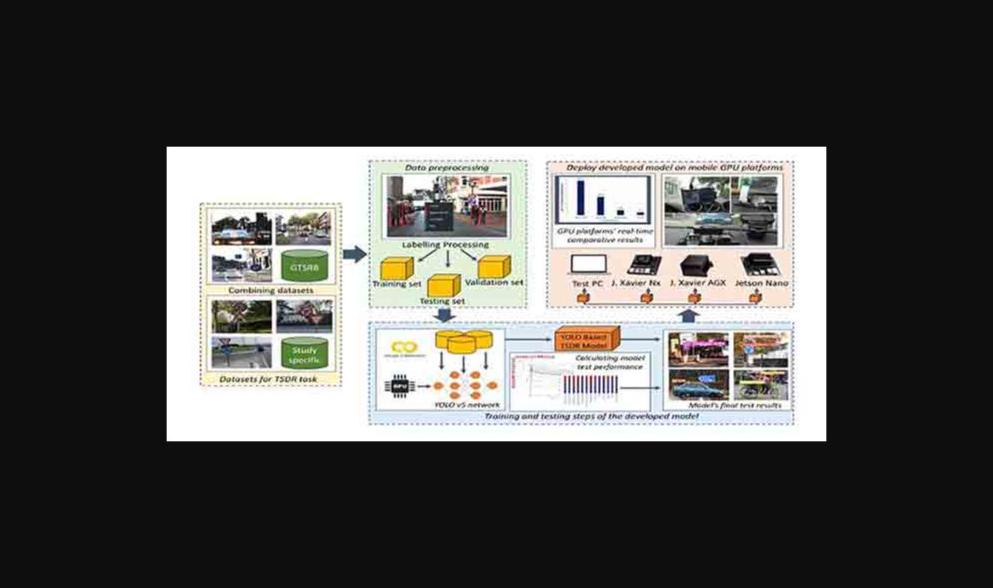
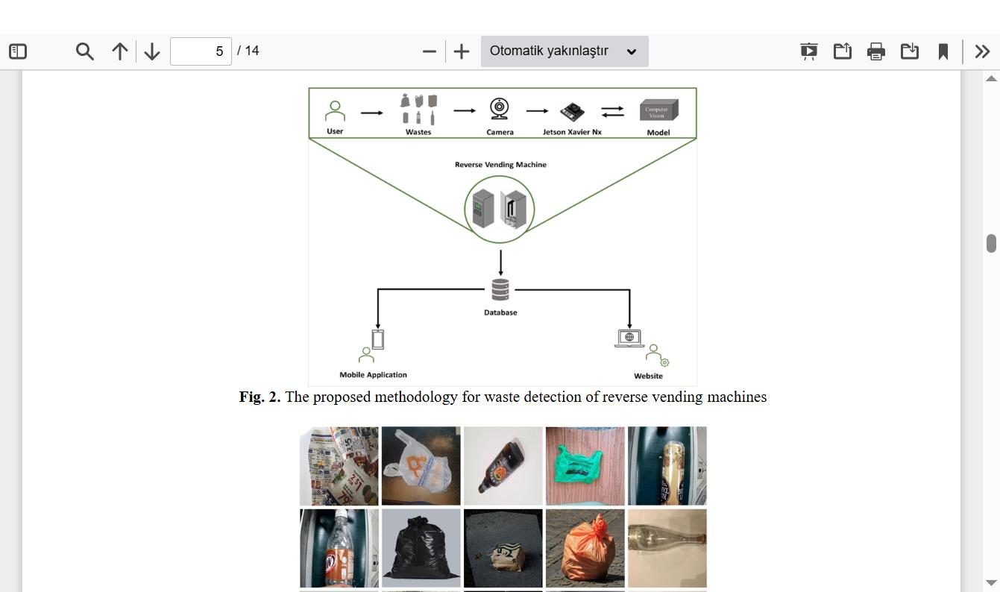

Bilgisayar mühendisliği alanında çalışan bir akademisyenim. Araştırma ilgi alanlarım bilgisayarlı görü, gömülü ve mobil GPU platformlarında gerçek zamanlı nesne tespiti, olay tabanlı (event-based) algılama ile sağlık ve enerji sistemleri için yapay zeka uygulamalarını kapsıyor. Sakarya Uygulamalı Bilimler Üniversitesi'nde Doktor Öğretim Üyesi olarak görev yapıyorum; ayrıca Arizona State University, School of Computing and Augmented Intelligence bünyesinde araştırma deneyimim bulunuyor.
Öğrenim Bilgisi
Post-Doktora — Arizona State University, School of Computing and Augmented Intelligence, Computer Science (2024–2025)span>
div>
Doktora — Sakarya Üniversitesi, Fen Bilimleri Enstitüsü, Bilgisayar Mühendisliği (2021)span>
div>
Yüksek Lisans — Sakarya Üniversitesi, Fen Bilimleri Enstitüsü, Bilgisayar ve Bilişim Mühendisliği (2019)span>
div>
Lisans — Sakarya Üniversitesi, Bilgisayar ve Bilişim Bilimleri Fakültesi, Bilgisayar Mühendisliği (2014)span>
div>
Akademik Görevler
Doktor Öğretim Üyesi — Sakarya Uygulamalı Bilimler Üniversitesi, Teknoloji Fakültesi, Bilgisayar Mühendisliği
div>
Araştırma Görevlisi — Arizona State University, School of Computing and Augmented Intelligence (2024–2025)span>
div>
Araştırma Görevlisi — Sakarya Uygulamalı Bilimler Üniversitesi, Bilgisayar Mühendisliği Anabilim Dalı
div>
Seçilmiş Yayınlar
Güney E., Bayılmış C., Çakar S., Atmaca Ö., Erol Erdeniz (2024). Autonomous control of shore charging based on computer vision. Expert Systems with Applications. DOI
Güney E., Cakan B., Bayılmış C. (2022). An Implementation of Real-Time Traffic Signs and Road Objects Detection Based on Mobile GPU Platforms. IEEE Access, 10, 86191–86203. DOI

Kestane B.B., Güney E., Bayılmış C. (2024). Real-time recyclable Waste Detection Using YOLOv8 for Reverse Vending Machines. JITEKI. DOI

Uzun S., Güney E., Bingöl B. (2022). U-Net Mimarisi ile Beyin Tümörü MRI Görüntülerinin Segmentasyonu. El-Cezeri Journal of Science and Engineering. DOI